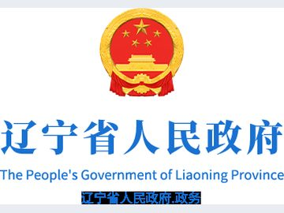
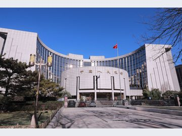

02
央行：继续实施适度宽松的货币政策，综合运用多种货币政策工具，保持流动性充裕
中国人民银行党委书记、行长潘功胜主持召开党委会议，传达学习习近平总书记在党的二十届五中全会上的重要讲话和全会精神，研究部署贯彻落实举措。

10月30日，中国人民银行党委书记、行长潘功胜主持召开党委会议，传达学习习近平总书记在党的二十届五中全会上的重要讲话和全会精神，研究部署贯彻落实举措。
中国人民银行党委书记、行长潘功胜主持召开党委会议，传达学习习近平总书记在党的二十届五中全会上的重要讲话和全会精神，研究部署贯彻落实举措。
据金融监管总局消息，10月30日，金融监管总局召开党委（扩大）会议，传达学习党的二十届五中全会精神，结合金融监管工作实际，研究部署贯彻落实措
10月30日，中国邮政储蓄银行股份有限公司（下称“邮储银行”，股票代码：601658.SH，1658.HK）公布了2026年第三季度报告。
10月30日，招商银行（600036.SH）披露2026年三季报。财报显示，该行前三季度实现营业收入2648.52亿元，同比增长5.34%；
10月30日，光大银行举办2026年第三季度业绩说明会。围绕该行经营情况，光大银行董事会秘书张旭阳表示，前三季度该行实现并表营收945.4亿元…
本报讯 10月28日的《经济参考报》发表题为《在垂直领域，见“隐形冠军”——来自辽宁鞍山的县域经济样本观察》的重点报道。
2026年10月30日，中国钢铁工业协会（下称“中钢协”）召开信息发布会，中钢协表示，当前，钢铁行业全面迈入高端化、智能化、绿色化提质升级新阶段。

新华网沈阳10月29日电（记者杨金志、李宇佳）10月28日出版的《经济参考报》发表题为《在垂直领域，见“隐形冠军”——来自辽宁鞍山的县域经济样本观察》的重点…

ここにはもともと2つの石棚があり、山の上が姑石、山の下が嫂石で、小姑と嫂（兄嫁）が薬草を採るという民間伝説に由来して名付けられた。
中国人民银行10月30日发布公告称，为进一步优化短端利率调控机制，从2026年11月2日起，公开市场操作进行调整。
每个工作日开展隔夜逆回购操作招标，操作利率为1.25%。7天期逆回购操作主要在税期、月末等时点开展。
